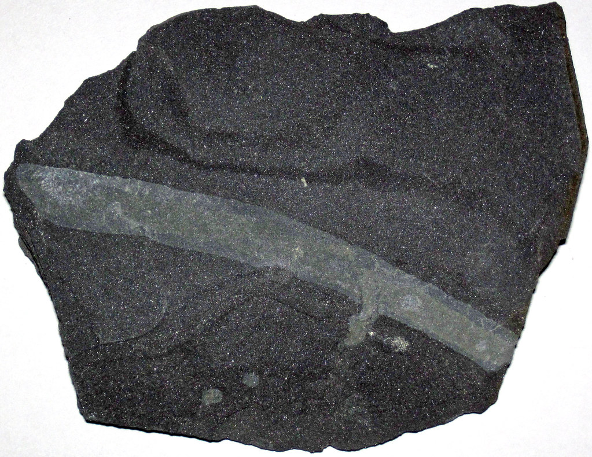
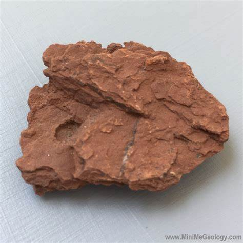
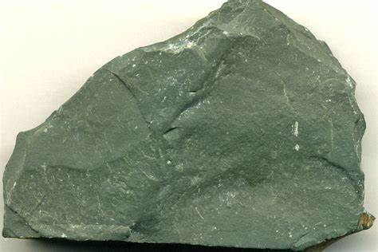
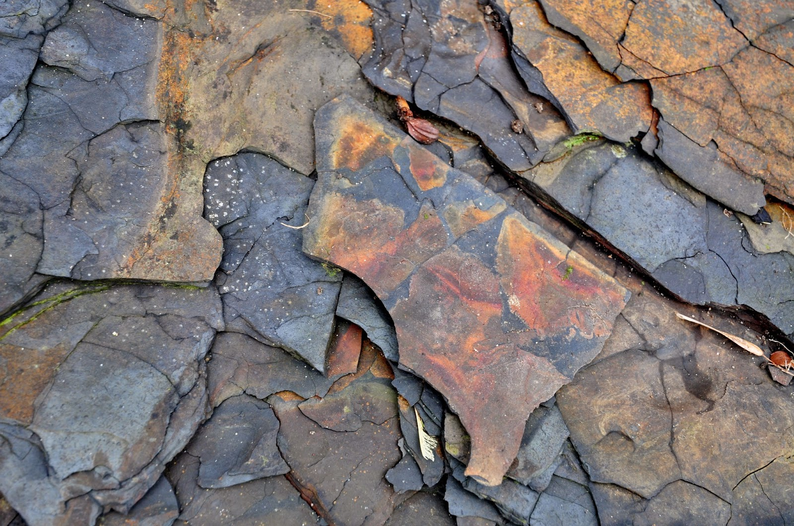

Shale: The Versatile Sedimentary Rock
Chemical Composition: Quartz, Feldspar, Clay minerals (Kaolinite, Illite, Smectite), Carbonates, Organic matter
Color: Varies (Gray, Black, Brown, Red, Green)
Hardness: 3 on the Mohs scale
Texture: Fissile, Laminated
Formation: Compaction of fine particles (clay, silt) in low-energy environments
Localities: United States, China, Brazil, Canada, Russia
Common Uses: Oil and gas extraction, Cement, Ceramics, Pottery
Shale is one of the most common types of sedimentary rock primarily composed of clay and silt particles. It forms through the compaction of these fine particles over millions of years in calm environments such as deep ocean floors, lakes, and riverbeds. Shale’s distinct feature is its fissility—its ability to break into thin layers along bedding planes.
The color of shale can vary widely, ranging from gray and black to red, brown, or even green, depending on the mineral content and the presence of organic materials. The rock is significant in the oil and gas industry because it can act as both a source and reservoir rock for hydrocarbons, forming shale gas and oil deposits that have revolutionized global energy production.
Formation and Types of Shale
Shale forms in low-energy environments where fine sediments settle out of the water over long periods. This process results in the accumulation of tiny particles which under pressure compress and solidify into rock. Over time, organic material trapped within the rock may transform into hydrocarbons.
1. Black Shale
Black shale is rich in organic material and often contains sulfides such as pyrite. It is a critical source rock in petroleum geology where the organic material can convert to oil and gas over time.
2. Red and Brown Shale
These varieties are usually colored by iron oxides and form in environments that are more oxygen-rich, such as shallow seas or riverbeds. Red shale is frequently used in the production of bricks and tiles due to its durability.
3. Green Shale
Green shale derives its color from the presence of chlorite or glauconite and typically forms in marine environments. It is less common but serves as an indicator of specific ancient environments.
4. Oil Shale
Oil shale contains significant amounts of kerogen, a precursor to oil. When heated, kerogen converts to crude oil. This type of shale is important for unconventional oil extraction, though it is more costly and environmentally challenging than traditional methods.
Structure and Properties of Shale
Shale has several key properties that distinguish it from other sedimentary rocks:
- Fissility: The ability to split into thin layers along bedding planes, making it ideal for certain industrial applications like brick and tile production.
- Hardness: Shale is relatively soft, measuring about 3 on the Mohs hardness scale.
- Porosity: Shale can be both porous and permeable, though its low permeability often traps oil and gas, necessitating hydraulic fracturing for extraction.
- Organic Content: Black shales are known for their organic matter, contributing to their role in the formation of hydrocarbons.
Uses of Shale
Shale has a broad range of applications across several industries:
1. Energy Production
The most economically significant use of shale is in the extraction of oil and gas. Shale formations such as the Marcellus and Barnett Shales in the United States are among the largest producers of natural gas. Hydraulic fracturing, or "fracking," is commonly used to extract shale gas and oil.
2. Construction Materials
Shale is a key ingredient in the production of cement and bricks. Its fine grain and ease of splitting make it ideal for these purposes. Red shale in particular is valued in brick-making due to its color and durability.
3. Ceramics and Pottery
Historically, shale has been used in pottery and ceramics where its fine clay-like texture contributes to the production of smooth and durable products.
4. Agriculture
Shale, when crushed and treated, can be used to improve soil structure. It is particularly helpful in increasing soil aeration and water retention, making it valuable in agricultural applications.
History of Shale
Shale has been recognized as a significant rock type since ancient times, particularly for its usefulness in construction and ceramics. However, its role in energy production only came to prominence in the 21st century with the advent of fracking technology.
Early Uses
Historically, shale was used for simple construction purposes, such as bricks and building materials. Early civilizations discovered its durability and the ease with which it could be shaped and split into thin layers.
Industrial Revolution
During the 19th century, shale became an important raw material for cement and brick manufacturing. With increased urbanization, its use in the construction industry grew substantially.
Modern Shale Boom
The early 21st century saw a dramatic increase in the importance of shale, particularly in the United States. Technological advancements in hydraulic fracturing and horizontal drilling unlocked vast reserves of shale gas and oil, revolutionizing the energy industry.
Sourcing and Locations of Shale
Shale is abundant worldwide, with significant deposits found on every continent. Key shale-producing regions include:
- United States: Shale formations like the Marcellus, Bakken, and Permian Basins are some of the richest sources of shale oil and gas in the world.
- China: China has vast shale deposits, particularly in the Sichuan Basin, which is a growing hub for natural gas extraction.
- Brazil: The Irati Formation in Brazil contains significant oil shale resources.
- Canada: The Duvernay and Montney formations are two of the largest shale gas producers in North America.
- Russia: Russia’s Bazhenov Formation is one of the largest untapped shale oil resources globally.
Famous Shale Formations
Several shale formations have become well-known due to their importance in energy production:
1. Marcellus Shale
Located in the Appalachian Basin in the eastern United States, the Marcellus Shale is one of the most significant natural gas reserves in North America.
2. Bakken Shale
The Bakken Formation, located in North Dakota, Montana, and Canada, is a rich source of both oil and gas. It has been a focal point of the U.S. shale oil boom.
3. Permian Basin
The Permian Basin, spanning Texas and New Mexico, is one of the largest shale oil-producing regions in the world. Its complex geology includes multiple stacked formations, making it one of the most productive oil basins.
Environmental Impact and Concerns
The extraction of shale gas and oil, particularly through hydraulic fracturing, has raised environmental concerns:
- Water Usage: Fracking requires large amounts of water, which can strain local water supplies, particularly in arid regions.
- Water Contamination: The potential for contamination of groundwater due to the chemicals used in fracking fluids is a significant concern.
- Earthquakes: Some regions have experienced increased seismic activity attributed to the disposal of wastewater from fracking operations into deep wells.
- Air Pollution: Methane, a potent greenhouse gas, can escape during the extraction and transportation of shale gas.
See Also
- Sedimentary Rocks, Hydraulic Fracturing, Natural Gas, Oil Shale, Cement Production from Shale